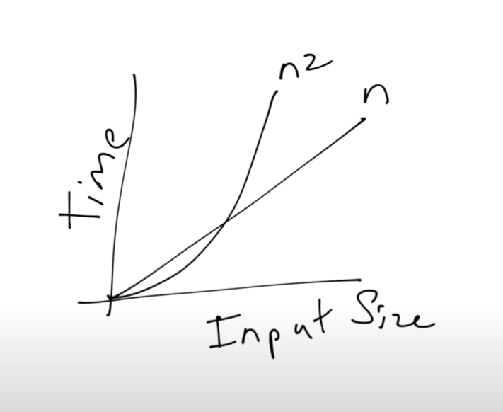

Alright anons, gather 'round for a braindump on Big O notations, that brainy stuff from comp sci that tells you how screwed your code is gonna be when you scale it up. So, picture this: You're a linear function, cruising along with your constant pace, feeling all high and mighty with your early lead. But here's the catch, the quadratic function is the sleeper hit here, starting off slow and steady, lurking in the shadows.
Now, while you're busy patting yourself on the back for your quick starts, this quadratic pal starts picking up pace. It's like that tortoise and hare story, except it's more brutal 'cause the quadratic isn't just catching up, it's about to blow past you like you're standing still. Why? 'Cause its growth rate isn't just steady; it's explosive. It scales up with the square of whatever you throw at it, which in layman's terms means it gets real fast real quick.
This image is from asymptotic notation by CS50
Let's dive into the deeper, darker side of this analogy. Think of your linear function as your everyday, run-of-the-mill tasks. Easy to start, easy to maintain, gives you the quick satisfaction of ticking off boxes. But life, oh boy, life ain't a sprint; it's a freaking marathon. That's where your quadratic function shines. It's all about those long-term, big-picture goals. Starts off slow, so you gotta be patient, maybe even struggle a bit, but the payoff? Massive. It builds up like a beast and gives you returns that are not just additive; they multiply.
So, while it's tempting to go for those quick linear wins, keep your eyes on the quadratic prize. It's about playing the long game, setting up those dominoes, and watching them fall in exponential cascades later on. In the grand scheme of things, it's the quadratic efforts that reshape the landscape. Keep grinding, anons, and think bigger.
. -. -..